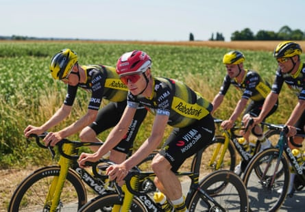
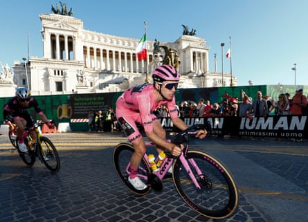

I t was not so long ago that Tadej Pogacar was Jonas Vingegaard’s whipping boy. It came on the brutal Col de la Loze, in July 2023 , when the Slovenian, dropped by another violent Vingegaard acceleration, announced wearily into his team radio: “I’m gone, I’m dead.”
By last summer, as the recent Netflix series Unchained reveals, the tables had turned. Pogacar barked angry insults at the Dane after Vingegaard refused to make the pace with him on the gravel stage around Troyes. He went on to dominate the race and win his third Tour de France by more than six minutes.
The pair, whose rivalry is becoming one of the Tour’s most longstanding, will be locked in battle again this month with Pogacar widely expected to hammer home the supremacy of the past 18 months with another win.
The UAE Team Emirates leader says he is “confident and ready”. Certainly his team, memorably bushwhacked by Vingegaard’s Visma-Lease a Bike teammate Simon Yates on the penultimate stage of this year’s Giro , will want payback.
In a tricky and tortuous opening to the Tour that will test every rider’s mettle, the biggest threat to Pogacar will be crashing. He has already ended up in a ditch this year, during the Italian gravel race Strade Bianche. Even then, he went on to win .
“The first week of the Tour is one of the most intense and nervous weeks,” he said. “You can quite easily lose the race in the first 10 days to the first rest day.
“A lot can happen in such a long race, but I’m looking forward to racing against Jonas again. He’s in great shape. It will be a great month for people in front of the TV and beside the road.”
The duel between the pair remains the headline act, but Pogacar, a winner 11 times this year, definitely has the upper hand. “There’s also been a lot of tension in the past years between UAE and Visma,” he said. “When you compete for the biggest race, there will be tension but we have big respect towards each other, too.”
Jonas Vingegaard, in a red helmet, trains with his Visma-Lease a Bike teammates in Lille.Photograph: Thibault Camus/AP
The duo will return to some of their old battlegrounds, including the vertiginous climb of the Loze, above Courchevel. Stage 16’s visit to Mont Ventoux, where Vingegaard first skipped away from Pogacar in July 2021, is also familiar terrain.
As for his televised four-letter outburst at the mild-mannered Dane, the 26-year-old sounded almost sheepish. “It’s not nice to ‘flip off’ at someone,” he said. “But in all sports, it’s easy to sometimes say something in the heat of the moment you might regret afterwards.
“When you finish a stage you congratulate each other, regardless of what happened on the road. That’s the beauty of sport in a way, you’ve left it all out on the field, you’re a competitor, but you cross the line and then you show respect to each other afterwards.”
For his part, Vingegaard is dutifully talking up his chances, but the impression is that the 28-year-old is increasingly a shadow of rider that took the yellow jersey in 2022 and 2023. Some of this would appear to be attributable to the aftermath of the devastating crash he suffered in the spring of 2024, when racing in the Basque Country in Spain.
“I really believed I was going to die,” he said after winning the Tour stage to Le Lioran that year. “I would never have believed it would have been possible for me to get this far.”
This spring, he crashed again, in Paris-Nice, arriving disoriented, bloodied and concussed at the finish in La Côte-Saint-André. His injuries forced another long break and he resumed racing at June’s Critérium du Dauphiné, when Pogacar inflicted yet another defeat , although by a slimmer margin.
As Vingegaard quit Paris-Nice, his understudy, Matteo Jorgenson, rode on to take his second win in the Race to the Sun. The 26-year-old, derided for being too heavy to succeed in a climber’s Tour de France, is waiting in the wings and has said “it’s time to set the bar higher”.
Alongside the American, Simon Yates, fresh from his win in the Giro, and Wout van Aert, recovering from a bout of illness in the buildup to the Tour, give Vingegaard’s team a powerhouse feel, but as they glance across at the rest, Pogacar’s support is no less impressive.
Simon Yates, the 2025 Giro d’Italia winner, offers powerhouse support to Jonas Vingegaard.Photograph: Luca Bettini/AFP/Getty Images
He can rely on proven back-up that includes the Tour of Oman winner, Adam Yates, twin brother of Simon; João Almeida, winner this season of the Tours of the Basque Country, Romandie and Switzerland; and a crew of other steadfast support riders, including Pavel Sivakov, Nils Politt and Tim Wellens.
There are 184 riders starting the Tour, but the Pogacar-Vingegaard narrative will inevitably dominate. There are, however, other storylines to follow: the return of the once-dominant Dave Brailsford to the Tour , seeking to reboot the Ineos Grenadiers in the world’s biggest race, is one of them, although privately the 61-year-old admits he has some catching up to do after his stint at Old Trafford.
The sense that the British team have lacked urgency, while leaning on constant talk of transition, has been evident for some years. Brailsford, meanwhile, is back in his happy place – that is as long as you do not bring up the Department for Culture, Media and Sport .
The French, yet again, are simply making up the numbers and the host nation’s 40 years of hurt shows no sign of ending. They have become a curmudgeonly presence at their own anniversary party, desperate for their own Lycra-clad Andy Murray.
Ironically, it could be the strategy of former British Cycling and Team Sky alumni Rod Ellingworth, that fuels hope. The 52-year-old is leading Project Lenny, the attempts of the Bahrain Victorious bid to develop the 21-year-old prodigy Lenny Martinez into that rare thing: a genuine French Tour contender.
As they say in the brasseries around Lille’s Place de la République, “ bon courage ”.